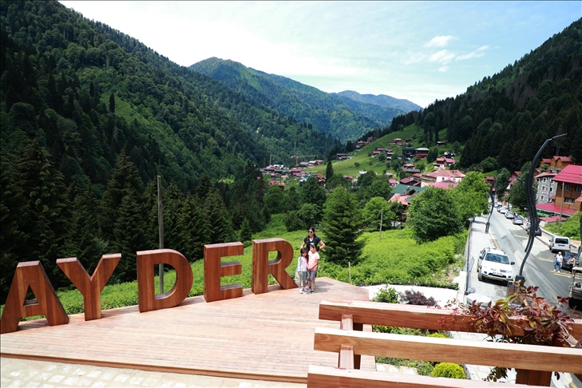

Ayder Yaylası
Ayder, Rize'nin Çamlıhemşin ilçesinin 19 km güneydoğusunda yer alan 1350 m rakımda ladin ve kayın ormanlarıyla kaplı bir yayladır. 1300'lü yıllarda Hala Vadisi'nde yaşayanlar tarafından kurulmuştur.

Ayder hiçbir zaman yayla olarak kullanılmamıştır, Ayder'i Hala Vadisi'nde yaşayanlar dinlenme amaçlı kullanmışlardır. Bölge halkı, Hala köyünden yaylalarına (Kavrun, Ceymakçur, Paákçur) göç ederken Ayder'de kaplıcada dinlenirler. Araştırmacı Metehan Mollamehmetoğlu, Ayder'in 1900'lü yıllarda bölge insanının dinlenme yeri olarak kullanıldığını belirtmektedir. Kaplıcanın geçmişi 1700'lü yıllara dayanmaktadır.
Hala Vadisi'nde yaşayanların kullandıkları Ayder, Aşağı Ceymakçur ve Yukarı Ceymakçur adlı üç yayla vardır. Mayıs ayında Ayder haziran ayında aşağı Ceymakçur temmuz ayında Yukarı Ceymakçur yaylalarına gidilir. Ağustos ayında Aşağı Ceymakçur'a gidilirken Ayder'de Hodoc olarak bilinen ot biçme şenlikleri düzenlenir. Eylül ayında da Ayder'e gidilir ve ekim ayında da Hala köyüne dönerlerdi. Bölge sakinleri yakın zamana kadar Ayder'i yayla olarak kullanırlardı. Turizmle beraber Ayder yaylası turizm ve eğlence merkezi oldu.
.png)